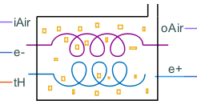
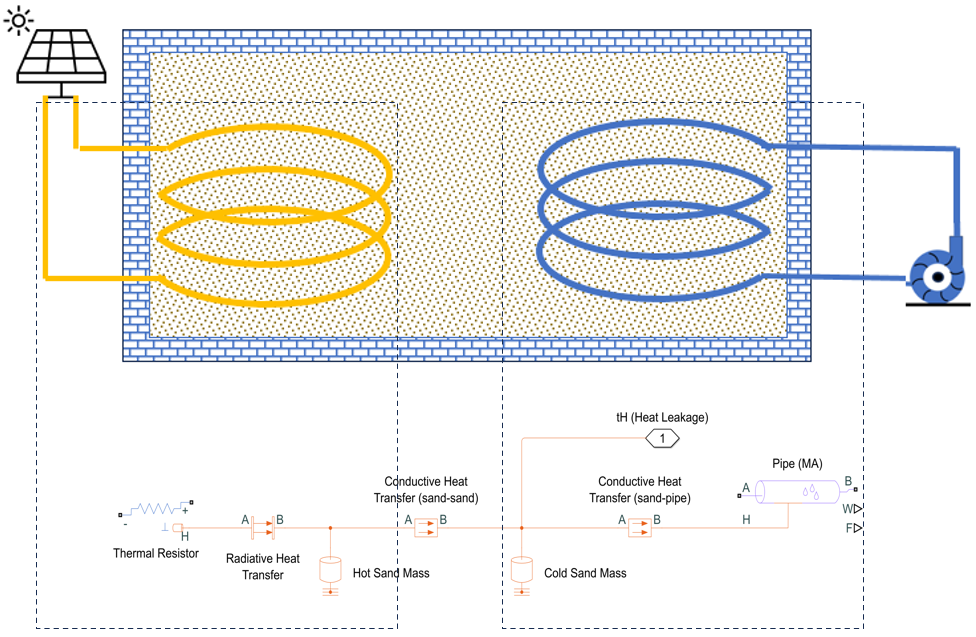
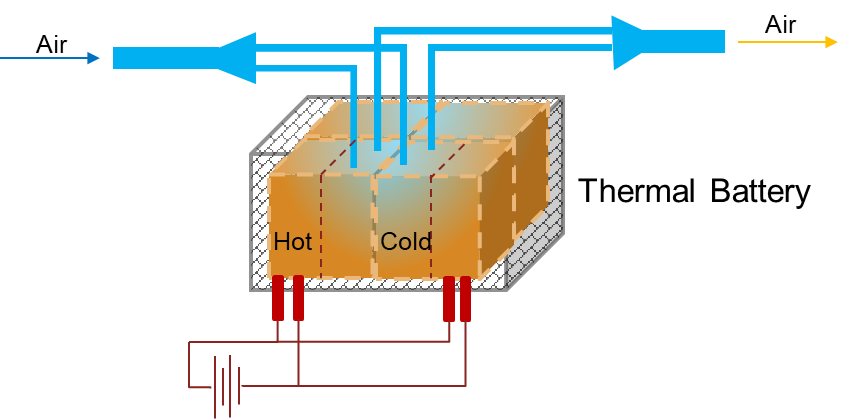
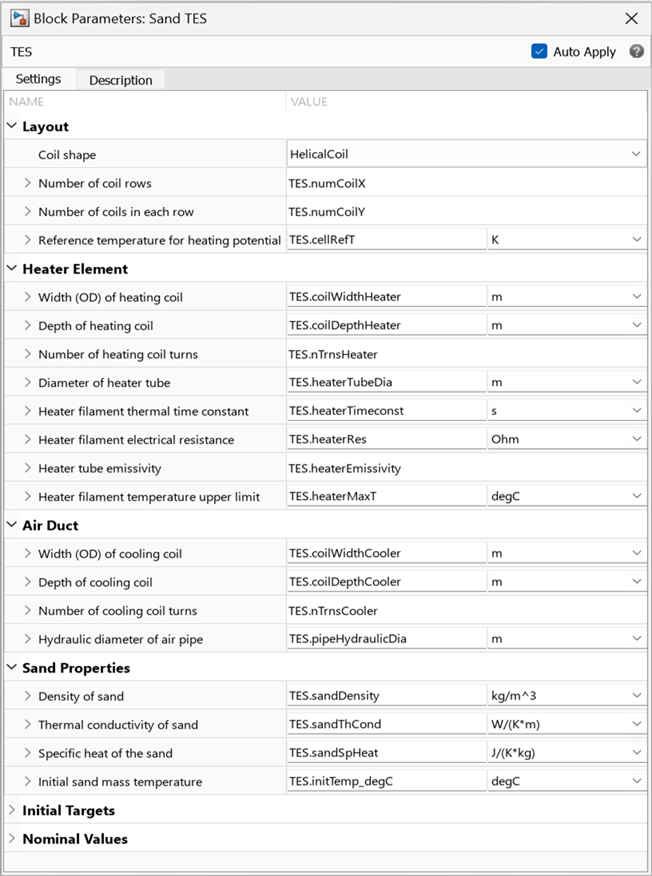

Sand Battery

Contents
Description
The Sand Battery block models a thermal energy storage by using sand as the energy storage medium. The block stores the energy in form of sensible heat of the sand. The block models a network of electrical heating coil, hot sand mass, cold sand mass, and moist air pipe. The subcomponents connect through each other using Conductive Heat Transfer blocks. The electrical heater and the hot sand mass connect to each other using a Radiative Heat Transfer block because, at high electrical heater temperatures, the radiation heat transfer is the dominant mode of heat transfer between the heater and the sand.
This figure shows the model of a single unit cell of the sand battery. To calculate the sand battery energy storage, the block multiplies the thermal energy stored in a single cell by total number of cells. To calculate the total number of celles, the block multiplies the values of the Number of coil rows and Number of coils in each row parameters. The block calculates all the electrical and heat transfer resistances by assuming parallel-connected cells. To ensure the accuracy of the energy calculation, the Biot number criterion internally constraints the mass of the sand associated with the heating coil or moist air pipe.

This figure shows the sand battery configuration when you set the Number of coil rows and Number of coils in each row parameters to 2.

Ports
Conserving
- e+ — Electrical conserving port associated with the positive node of the power source.
- e- — Electrical conserving port associated with the negative node of the power source.
- iAir — Moist air conserving port associated with the outlet side of flow source. A positive value denotes air inflow.
- oAir — Conserving moist air port associated with the inlet side of flow source. A positive value denotes air outflow.
- tH — Thermal conserving port associated with the heat leakage from the thermal energy storage (TES).
Parameters

Layout
- Coil shape — Shape of heating and cooling coil, specified as Helical Coil or U-Shape Coil.
- Number of coil rows — Number of coil rows on a plane perpendicular to the flow of the current or air, specified as a positive scalar.
- Number of coils in each row — Number of coil columns in each row, specified as a positive scalar.
- Reference temperature for heating potential — Reference temperature for calculating the heating potential of the thermal battery, specified as a scalar. The block calculates the heating potential using the reference temperature as starting point.
Heater Element
- Width (OD) of heating coil — Width of the heating coil, specified as a positive scalar. This value is the same as the helix outer diameter for helical coils.
- Depth of heating coil — Depth of the heating coil, specified as a positive scalar.
- Number of heating coil turns — Number of turns of the heating coil, specified as a positive scalar.
- Dimeter of heater tube — Diameter of the glass tube that surrounds the heater filament, specified as a positive scalar.
- Heater filament thermal time constant — Thermal time constant of the current-carrying heater filament, specified as a positive scalar.
- Heater filament electrical resistance — Electrical resistance of the heater filament, specified as a positive scalar.
- Heater tube emissivity — Radiational emissivity of the heater tube surface, specified as a positive scalar in the range [0,1].
- Heater filament temperature upper limit — Faulting temperature of the filament material, specified as a positive scalar.
Air Duct
- Width (od) of cooling coil — Width of the cooling coil, specified as a positive scalar. This value is the same as the helix outer diameter for helical coils.
- Depth of cooling coil — Depth of the cooling coil, specified as a positive scalar.
- Number of cooling coil turns — Number of turns of the cooling coil, specified as a positive scalar.
- Hydraulic diameter of air pipe — Internal diameter of the pipe, specified as a positive scalar.
Sand Properties
- Density of sand — Density of the sand, specified as a positive scalar.
- Thermal conductivity of sand — Thermal conductivity of the sand, specified as a positive scalar.
- Specific heat of sand — Specific heat of the sand, specified as a positive scalar.
- Initial sand mass temperature — Initial temperature of the sand at the beginning of the simulation, specified as a positive scalar.